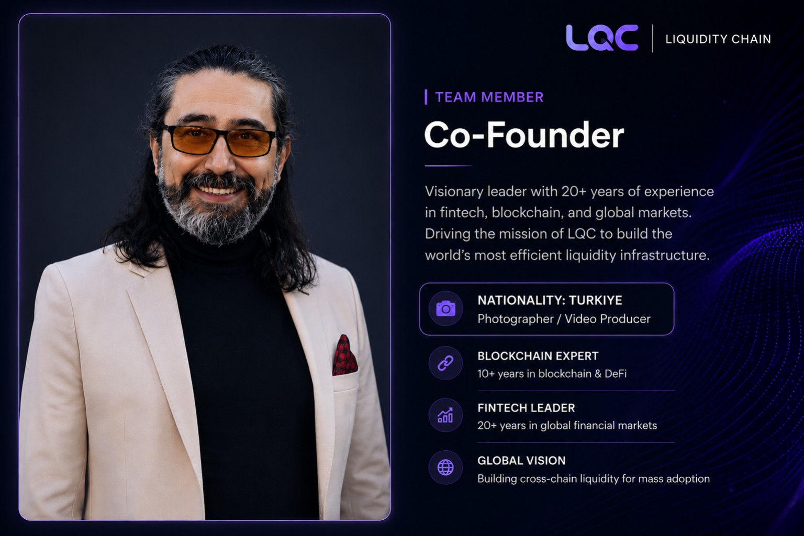

LQC Team Member
ALI
ISIK
Co-Founder · LQC
Photographer, video producer and creative professional contributing to the global identity of Liquidity Chain.
ALI ISIK is a Co-Founder of LQC (Liquidity Chain) and a creative professional from Türkiye specializing in photography and video production. Through visual storytelling and digital content creation, he supports LQC’s brand presentation and project communications.
Working with the international LQC team, he helps communicate the project’s vision for decentralized liquidity infrastructure through clear and professionally produced visual content.
NATIONALITYTürkiye
CURRENT POSITIONCo-Founder · LQC (Liquidity Chain)
PROFESSIONAL FOCUSPhotography · Video Production · Visual Communication
PhotographyVideo ProductionVisual StorytellingDigital ContentBlockchain Communications